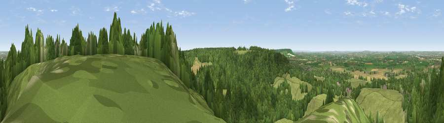

Viewpoint near Cadsden
#5615 in England · top 3% of its area beats it · near CadsdenThe view, rendered

A 360° render of this exact spot computed from the terrain model, tree cover and land cover — summer colours, afternoon light, calibrated against photographs of famous viewpoints. Real trees, hedges and buildings will differ in detail.
The panorama
Grey silhouette: terrain skyline in each direction (720 bearings, Earth curvature and refraction included). Dashed green: skyline with trees (+15 m) and buildings (+8 m) as obstacles. Blue strip: how far the ground is visible on each bearing.
Where the view opens
Wedge length = distance to the farthest visible ground on that bearing (vegetation-aware). Rings at 10, 25 and 50 km.
What fills the view
49% woodland · 42% grassland · 8% cropland · 1% built-up
Angular shares of the visible panorama (visual magnitude), not map area. Landscape diversity 0.42 (0–1 Shannon).
Key numbers
More beautiful places nearby
The staircase of upgrades: each row has a higher view potential than everything closer. Driving times are estimates from straight-line distance, calibrated against real road routing — check an actual route before setting out.
| Place | Direction | Drive | Score |
|---|---|---|---|
| Beacon Hill | NNE · 1 km | ~3 min | 72.7 |
| Coombe Hill Monument | NE · 2 km | ~6 min | 75.5 |
| Viewpoint near Woolstone | WSW · 56 km | ~78 min | 76.7 |
| Viewpoint near Meon Vale | WNW · 77 km | ~101 min | 77.0 |
| Martinsell viewpoint | WSW · 77 km | ~101 min | 77.3 |
| Broadway Hill | WNW · 78 km | ~102 min | 77.7 |
| Viewpoint near Buriton | S · 85 km | ~110 min | 80.0 |
| Beacon Hill | S · 87 km | ~111 min | 85.8 |
51.73778, -0.79759 · source: screening · position refined by local search. Computed location — check access rights before visiting.